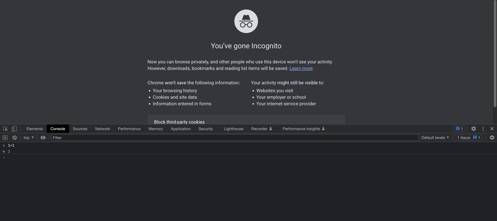

12 HTML, CSS e JavaScript
Um dos pontos fortes do Shiny é nos permitir construir aplicações web sem precisarmos saber programar em HTML, CSS e JavaScript. Com as funções disponíveis no pacote shiny e nos diversos pacotes feitos pela comunidade Shiny, já conseguimos produzir aplicativos bonitos e complexos.
No entanto, conhecer ao menos o básico dessas linguagens nos permite ir além do que existe nos pacotes disponíveis e construir as nossas próprias ferramentas ou customizar nossos apps da maneira que quisermos. Também nos permite entender melhor como o Shiny funciona, o que facilita a tarefa de programar os nossos apps.
Neste capítulo, vamos apresentar os conceitos básicos de HTML e CSS com o objetivo de ter uma boa base para continuar aprendendo essas linguagens. Também mostraremos como inserir códigos JavaScript em nossos apps a partir de alguns exemplos. Não faremos uma introdução formal dessa linguagem aqui.
12.1 HTML
O HTML é uma linguagem de marcação para construir páginas web. Uma linguagem de marcação é apenas um tipo de documento que contem texto simples (como em um bloco de notas) e um conjunto de instruções para formatar (anotar, marcar) parte específicas do conteúdo. Além do HTML, o LaTeX e o (R) Markdown são outros exemplos comuns de linguagem de marcação.
Nas seções a seguir, apresentamos os conceitos básicos da linguagem. São três os objetivos aqui:
entender como um documento HTML é estruturado;
ganhar um pouco de vocabulário, isto é, conhecer as principais tags;
e conhecer a nomenclatura da linguagem, o que vai facilitar bastante quando for preciso pesquisar por algo na internet.
12.1.2 Elemento HTML
As tags no HTML definem os chamados elementos HTML. Um elemento HTML é composto por uma tag de abertura, algum conteúdo e uma tag de fechamento.
<nome_da_tag> conteúdo </nome_da_tag>Alguns elementos podem aparecer corretamente sem a tag de fechamento, mas não conte sempre com isso. Resultados inexperados e erros podem acontecer se você esquercar a tag de fechamento.
12.1.3 Documento HTML
Um documento HTML é um arquivo de texto com extensão .html que possui um código HTML válido dentro. Todo HTML precisa começar com uma declaração de tipo
<!DOCTYPE html>Ela representa o tipo de documento, o que ajuda os navegarores a mostrar as páginas corretamente. Ela deve aparecer apenas uma vez, no topo da página.
O código HTML em si começa com a tag <html> e deve terminar com </html>.
A parte visível do documento fica entre as tags <body> e </body>.
<!DOCTYPE html>
<html>
<body>
O conteúdo da página fica aqui.
</body>
</html>Importante: só pode haver apenas um <body> em um documento HTML.
12.1.4 A tag <head>
A tag <head> cria uma seção de metadados para a nossa página HTML.
O elemento <title>, por exemplo, pode ser utilizado para definir um título para a página, usado pelo navegador (na barra de ferramentas ou quando a página é adicionada aos favoritos) e por sites de busca.
<html>
<head>
<title>Esse é o título da página</title>
</head>
<body>
O conteúdo da página fica aqui.
</body>
</html>Veremos adiante outros metadados que podemos definir na seção <head>.
12.1.5 Cabeçalhos
Você pode construir títulos e subtítulos com as tags <h1> a <h6>
<h1>Título 1</h1>
<h2>Título 2</h2>
<h3>Título 3</h3>
<h4>Título 4</h4>
<h5>Título 5</h5>
<h6>Título 6</h6><h1> define o título mais importante, enquanto <h6> o menos importante.
É uma boa prática colocar apenas um
<h1>por página HTML.
12.1.6 Parágrafos
Parágrafos são definidos pela tag <p>. Eles sempre iniciam em uma nova linha. Os navegadores automaticamente criam um espaço em branco (margem) antes e depois do parágrafo.
<p>
Isto é um parágrafo.
</p>
<p>
E aqui um outro parágrafo.
</p>O HTML não é sensível à caixa das palavras, isto é,
<P>e<p>são equivalentes. No entanto, é uma boa prática utilizar a caixa baixa.
12.1.7 Elementos aninhados
Elementos HTML se organizam de maneira hierárquica, isto é, os elementos são aninhados dentro de outros.
<!DOCTYPE html>
<html>
<body>
<h1>Título da página</h1>
<p>Este é o primeiro <b>parágrafo</b> desta página HTML.</p>
</body>
</html>No código acima
- o elemento
<body>reside dentro do elementohtml - os elementos
<h1>e<p>residem dentro do elementobody - o elemento
<b>, que deixa o texto em negrito, reside dentro do elemento p.
12.1.8 Atributos
Todos os elementos HTML podem ter atributos, que provêm informação adicional sobre os elementos.
Atributos são sempre especificados na tag de abertura. Eles geralmente possuem a seguinte sintaxe nome="valor". Dois argumentos diferentes são separados por um espaço vazio.
<!DOCTYPE html>
<html lang="pt-BR">
<body>
"Conteúdo da página"
</body>
</html>O atributo lang no elemento <html>, por exemplo, declara qual será o idioma utilizado na página1.
12.1.9 Links
Links no HTML são chamados de hiperlinks (ou hiperligação). Eles são criados com a tag <a>.
<a href="https://curso-r.com">
Clique aqui para acessar o site da curso-r
</a>Veja que este elemento possui o atributo href, que define o destino do link. O conteúdo deste elemento será o texto visível na tela para ser clicado.
12.1.10 Comentários
Podemos adicionar comentários ao nosso código HTML a partir da seguinte sintaxe
use
<!--para iniciar o comentáriouse
-->para encerrar o comentário
<p>Isto é um parágrafo</p>
<!-- Isto é um comentário e vai ser ignorado pelo navegador. -->
<p>Isto é um outro parágrafo</p>12.1.11 Elementos vazios
Alguns elementos HTML não possuem conteúdo e, portanto, não precisam de uma tag de fechamento. Esses elementos são chamados de elementos vazios.
A tag <br>, que gera uma quebra de linha na página, é um exemplo de elemento vazio.
<p>Parágrafo 1</p>
<br>
<p>Parágrafo 2</p>Veja que não precisamos fechar a tag <br> com uma tag </br>
12.1.12 Imagens
Imagens podem ser inseridas em uma página HTML a partir da tag <img>.
<img src = "caminho_ou_url_da_imagem" width = "100px" height = "100px" alt = "Essa é uma boa descrição da imagem">No elemento acima:
o argumento
srcé utilizado para especificar o caminho ou URL da imagemos argumentos
widtheheightsão utilizados para especificar o comprimento e altura da imagem;especificar o comprimento e altura é importante pois o navegador reserva o espaço da imagem na tela, mantendo o layout da página, caso ela demore para ser carregada;
podemos usar o argumento
altpara atribuir uma descrição à imagem, o que é utilizado por leitores de tela para descrever a imagem para pessoas com deficiências visuais.
12.1.13 Elementos em bloco e em linha
Elementos em bloco sempre começam em uma nova linha e ocupam todo o comprimento da tela ou todo o comprimento que tiverem a disposão. Os navegadores automaticamente adicionam algum espaço (margem) antes e depois desses elementos.
Elementos em linha não iniciam uma nova linha. Esses elementos só ocupam o comprimento necessário para apresentar seu conteúdo na tela.
12.1.14 A tag <div>
A tag <div> é um elemento em bloco normalmente é utilizado como um container para outros elementos HTML. Se você não atribuir nenhum atributo a ela, como comprimento ou altura, ela não gera nenhum efeito na página.
Normalmente aplicamos a ela atributos que vão definir o estilo de parte ou de todos os elementos que a <div> contém.
<div>
<p>Um parágrafo</p>
<a href="https://curso-r.com">Um link</a>
</div>12.1.15 A tag <span>
A tag <span> é um elemento em linha utilizada como um container para outros elementos HTML. Se você não atribuir nenhum atributo a ela, como comprimento ou altura, ela não gera nenhum efeito na página.
Normalmente aplicamos a ela atributos que vão definir o estilo de parte ou de todos os elementos que a <div> contém.
<p>
Como formatar uma única <span>palavra</span>?
</p>12.2 CSS
CSS (Cascading Style Sheets) é uma linguagem de folha de estilo utilizada para formatar páginas Web. Com CSS, podemos controlar a cor, fonte, tamanho do texto, espaçamento entre elementos, cores e imagens de fundo, a maneira como os elementos são mostrados na página a depender dos diferentes tamanhos de tela e muito mais!
O objetivo de uma linguagens de folha de estilo é separar a formatação e a estrutura de um documento, permitindo que sejam construídos isoladamente, mas os unindo a partir de algum tipo de ligação. Veremos adiante como isso se dá no HTML.
A palavra Cascading (cascata) significa que um estilo aplicado a um elemento pai também é aplicado a todos os elementos filhos, o que é uma característica importante devido à hierarquia de elementos do HTML.
A seguir, apresentaremos os conceitos básicos para aplicar CSS a um documento HTML.
12.2.1 Regras CSS
Para aplicar estilo a um elemento HTML usando CSS, devemos escrever uma regra. A seguir, temos uma regra CSS que define a cor dos parágrafos (o conteúdo dos elementos <p>) como azul e o tamanho da fonte como 12px.
p {
color: blue;
font-size: 12px
}No código:
pé chamado de seletor, isto é, a definição dos elementos aos quais o estilo será aplicadocolor: blue;efont-size: 12pxsão chamadas de declarações, que define o estilo a ser aplicadocolorefont-sizedentro de cada declaração são chamados de propriedades, isto é, a característica de cada elemento que será alterada.já
bluee12pxsão os valores atribuídos a cada propriedade.
Para aplicar essa regra, podemos inserir esse código em um documento HTML de 3 maneiras:
em linha (inline), dentro do elemento HTML, usando o atributo
style;interno (internal), dentro do documento HTML, mas fora dos elementos, usando a tag
<style>dentro da seção<head>;externo (external), em um arquivo externo, usando a tag
<link>na seção<head>para apontar para um arquivo CSS.
O jeito mais comum de adicionar CSS ao HTML é utilizando um arquivo CSS externo, mas veremos aqui como utilizar as três formas.
12.2.2 CSS inline
O CSS inline é utilizado para aplicar estilo a um único elemento HTML. Fazemos isso usando o atributo style do elemento.
<p style = "color: blue;"> Esse texto terá a cor azul. </p>Veja que neste caso não precisamos declarar um seletor.
12.2.3 CSS interno
Um CSS interno é utilizado para definir estilo para os elementos de uma única página HTML. Ele é definido na seção <head>, dentro de uma tag <style>.
<html>
<head>
<style>
h1 {
color: red;
}
p {
color: blue;
}
</style>
</head>
<body>
<h1> Esse título terá a cor vermelha </h1>
<p> Esse texto terá a cor azul </p>
</body>
</html>12.2.4 CSS externo
Um arquivo CSS externo é utilizado para definir o estilo de várias páginas HTML. Para associar um arquivo CSS a uma página HTML, usamos a tag <link> na seção <head>.
A tag <link> é utilizada para estabelecer uma relação entre o arquivo HTML e um arquivo externo. O atributo href recebe o caminho para o arquivo externo (nosso arquivo CSS) e o atributo rel estabele qual o tipo de relação entre os arquivos.
<!--Arquivo CSS-->
h1 {
color: red;
}
<!--Arquivo HTML-->>
<html>
<head>
<link rel="stylesheet" href="custom.css">
</head>
</html>12.2.5 Cores
Para alterar cores, utilizamos as propriedades color e background-color.
p {
color: white;
}
h1, h2 {
color: blue;
}
body {
background-color: black
}Nota: repare que você pode selecionar um grupo de elementos separando cada seletor por uma vírgula (h1, h2).
12.2.6 Tamanho da fonte
Para alterar o tamanho da fonte, utilizamos a propriedade font-size.
p {
font-size: 10px;
}
h1 {
font-size: 12pt;
}12.2.7 Fontes
Para alterar a fonte do texto, utilizamos a propriedade font-family.
p {
font-family: "Times New Roman", Times, serif;
}
p {
font-family: Arial, Helvetica, sans-serif;
}Nota: você pode especificar mais de uma fonte em uma declaração, o que é útil para garantir que pelo menos uma das fontes especificadas esteja instalada no navegador de quem acessar a página HTML. A preferência é da esquerda para a direita.
Recomendação: leia as seções sobre fonte do W3Schools.
Para importar uma fonte do Google fontes, basta utilizar o elemento <link rel = "stylesheet"> passando o link da fonte no atributo href.
<head>
<link rel="stylesheet" href="https://fonts.googleapis.com/css?family=Sofia">
<style>
body {
font-family: "Sofia", sans-serif;
}
</style>
</head>Link para a fonte Sofia: https://fonts.google.com/specimen/Sofia?query=sofia
12.2.8 Bordas
Para definir uma borda a um elemento, utilizamos a propriedade border.
h1 {
border: 1px solid black;
}O valor
1pxse refere à espessura da borda.O valor
solidse refere ao estilo da borda.O valor
blackse refere à cor da borda.
Nota: você pode definir uma borda para quase todos os elementos HTML.
12.2.9 Classes
Elementos HTML possuem um atributo class que pode ser utilizado como seletor em declarações CSS.
<!-- HTML -->
<p class = "azul">Este parágrafo ficará azul</p>
<p>Este parágrafo não ficará azul</p>
<!-- CSS -->
.azul {
color: blue;
}Repare que para usar uma classe como seletor, colocamos um . antes do nome da classe.
Nota: elementos HTML podem ter mais de uma classe. Múltiplas classes são separadas por um espaço. Uma mesma classe pode ser utilizada em mais de um elemento HTML.
12.2.10 Ids
Elementos HTML possuem um atributo id que pode ser utilizado como seletor em declarações CSS. Ao contrário das classes, o id deve ser único dentro do documento HTML, isto é, dois elementos HTML não devem ter o mesmo id.
<!-- HTML -->
<p id = "paragrafoAzul">Este parágrafo ficará azul</p>
<p>Este parágrafo não ficará azul</p>
<!-- CSS -->
#paragrafoAzul {
color: blue;
}Repare que para usar um id como seletor, colocamos um # antes do nome do id.
12.2.11 Especificidade
Quando mais de uma declaração afeta um elemento HTML, utilizaremos as regras a seguir para definir a especificidade de um seletor:
- Se o estilo é inline (+1000)
- Se o seletor é um id (+100)
- Se o seletor é uma classe (+10)
- Se o seletor é um elemento (+1)
Nota: saiba mais sobre especificidade neste artigo da W3Schools em inglês ou neste artigo em português.
12.2.12 Margem
Margens são utilizadas para criar espaço em branco entre elementos HTML.
p {
margin: 1px 2px 4px 3px;
}
p {
margin-top: 1px;
margin-right: 2px;
margin-bottom: 4px;
margin-left: 3px;
}As duas regras CSS acima são equivalentes.
12.2.13 Padding
A propriedade padding é utilizada para criar espaço ao redor do conteúdo de um elemento, dentro de qualquer borda definida.
p {
padding: 1px 2px 4px 3px;
}
p {
padding-top: 1px;
padding-right: 2px;
padding-bottom: 4px;
padding-left: 3px;
}As duas regras CSS acima são equivalentes.
12.2.14 Box model
O box model do CSS é essencialmente uma caixa que envolve todos os elementos HTML. Ele consiste de uma margem, uma borda, padding e o próprio conteúdo do elemento.
A imagem abaixo ilustra o box model:

12.2.15 Display
A propriedade display especifica se e como um elemento HTML é exibido na tela.
Todo elemento HTML tem um valor padrão para essa propriedade. O valor padrão do display para a maioria dos elementos é block (em bloco) ou inline (em linha). Utilizando essa propriedade, podemos fazer uma <div> em linha ou um <img> em bloco.
#divInline {
display: inline
}
#imgBlock {
display: block;
}Nota: também é possível atribuir o valor none a essa proprieda, fazendo com que o elemento não seja mostrado na tela. Isso é utilizado com JavaScript para mostrar/esconder elementos.
12.2.16 Posicionamento
A propriedade position define que tipo de posicionamento será usado em um elemento HTML.
As principais opções são:
static, elementos são renderizados na ordem que eles aparecem no documento HTML (valor padrão)relative, os elementos são posicionados relativamente a sua posição normal, permitindo o ajuste do elemento a partir deoffsetsabsolute, os elementos são posicionados relativamente ao seu primeiro elemento ancestral compositiondiferente destaticfixed, os elementos são posicionados relativamente à janela do navegador
12.3 JavaScript
O JavaScript (JS) é uma linguagem de programação criada para a Web. Ele foi criado em apenas 10 dias, em 1995, por uma única pessoa, Brendan Eich. Ele foi inicialmente chamado LiveScript, mas como a linguagem Java era popular na época, o nome mudou para JavaScript, embora as duas linguagens não tenham nenhuma relação uma com a outra.
O papel do JavaScript é possibilitar interatividade em páginas Web. Enquanto o HTML e o CSS apenas ditam como esse conteúdo será apresentada na tela, códigos JavaScript geram comportamentos disparados por ações da pessoa acessando a pagina.
O código JS é colocado junto ao HTML e interpretado pelo navegador. Todo navegador moderno possui um interpretador de JavaScript, você pode testar isso acessando as “Ferramentas de desenvolvedor” do seu navegador e clicando na aba “Console”. O terminal apresentado será um interpretador JavaScript.

Nesta seção, não faremos uma introdução formal ao JavaScript, pois qualquer tentativa seria incompleta ou muito extensa para o escopo desse livro. Além disso, existe bastante conteúdo introdutório e gratuito sobre JavaScript disponível na internet. O que abordaremos aqui será, dado algum conhecimento prévio da linguagem, como utilizar o JavaScript dentro do Shiny. Começaremos mostrando como inserir um código feito em JS no seu Shiny app e, em seguida, como acessar valores dos inputs do app dentro de um código JavaScript.
12.3.1 Inserindo JavaScript em seu app
12.3.2 Acessando inputs via JavaScript
12.4 Exercícios
1 - O que são elementos HTML?
2 - Para que serve a seção <head> de um código HTML?
3 - Conserte o erro do código HTML abaixo:
<p> Para acessar a loja, basta clicar <a href = "https://loja.curso-r.com">neste link</p></a>4 - Qual a diferença entre as tags <div> e <span>?
5 - Ao que se refere o termo cascading da sigla CSS?
6 - Qual a ordem de precedência com relação ao local onde CSS pode ser colocado (inline, interno, externo)?
7 - O que é o box model no CSS?
8 - Segundo o código CSS abaixo, a caixa azul vai aparecer sobre o fundo amarelo ou rosa? E a caixa laranja?
<div style = "position: relative;">
<div style = "height: 100px; background-color: yellow;"></div>
<div style = "height: 100px; background-color: pink;">
<div style = "height: 40px; width: 10%; background-color: blue;">
Caixa azul
</div>
<div style = "height: 40px; width: 10%; background-color: orange; position: absolute; top: 0px;">
Caixa laranja
</div>
</div>
</div>9 - Reproduza a página HTML contida neste link. Sinta-se livre para deixar o visual da página da sua maneira.
É uma boa prática declarar o idioma da página, pois isso é utilizado pelos algorítmos de busca e pelos navegadores.↩︎